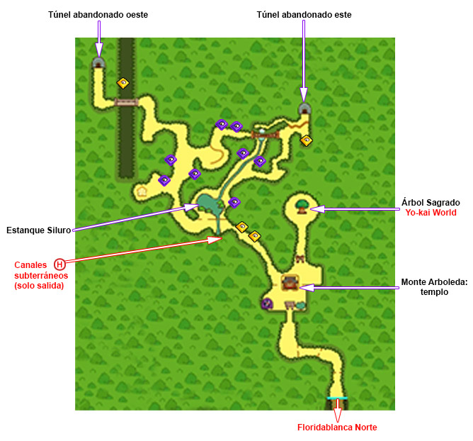
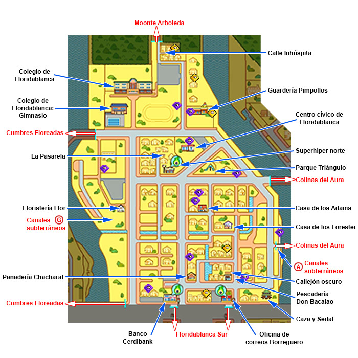
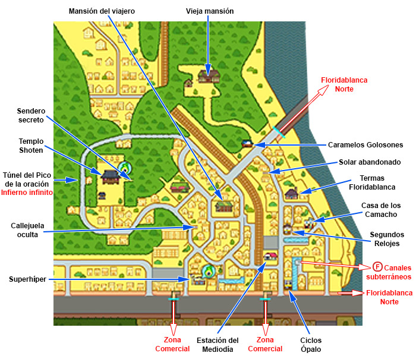
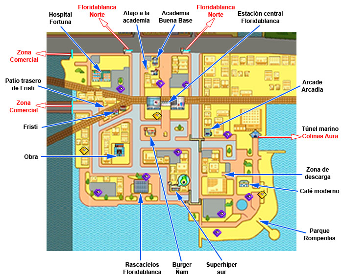
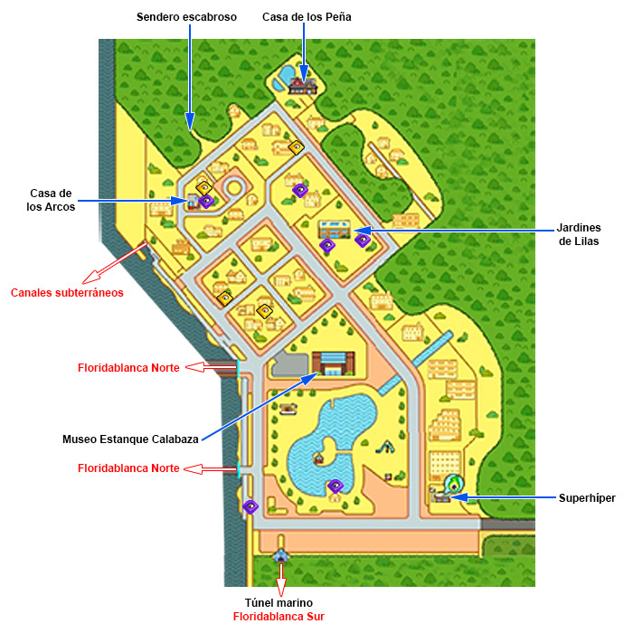

Los yo-kai se encuentran en todas partes sin embargo no podemos verlos, a no ser que se posea un yo-kai watch(debajo una imagen)
Sin embargo por razones que aún no se comprenden completamente a los yo-kai les encanta causar estragos y sucesos supuestamente inexplicables en la apacible ciudad de Floridablanca, Floridablanca se puede dividir en varias zonas:
Monte Arboleda
Es una zona al norte de Floridablanca. A excepción de la deslumbrante naturaleza del lugar, solo se puede destacar una curiosa especie de maquina expendedora al pie de un árbol en la cima del monte, se ha probado antes sacar algo pero lo unico que salió fue una roca en forma de capsula.

Floridablanca Norte
El lugar se divide en varios barrios: la zona residencial, la avenida y el Parque Triángulo, la orilla del mar, el cruce de la panadería, el sendero de Arboleda y toda la parte del Colegio Floridablanca y la Guardería Pimpollos.

Cumbres Floreadas
Es una zona rural y con extremo contacto con la naturaleza. Aquí se encuentran puntos de mucho interés, tales como el Templo Shoten en donde se puede encontrar a un singular monje, o Segundos Relojes, el local del Sr. Buenavista un gran relojero que asegura haber trabajado con relojes de otro mundo, es todo un personaje.

Floridablanca Sur
Es una de las zonas más fuertes a nivel comercial, turístico y costero.

Zona Comercial
Como su nombre indica, tiene gran cantidad de comercio, teniendo una calle, la Calle del Comercio, repleta de comida para comprar. Esta es el lugar más pequeño de Floridablanca
Colinas del Aura
Esta zona se caracteriza por su entorno natural con árboles, senderos escabrosos y un gran estanque central que alberga el Museo Estanque Calabaza
